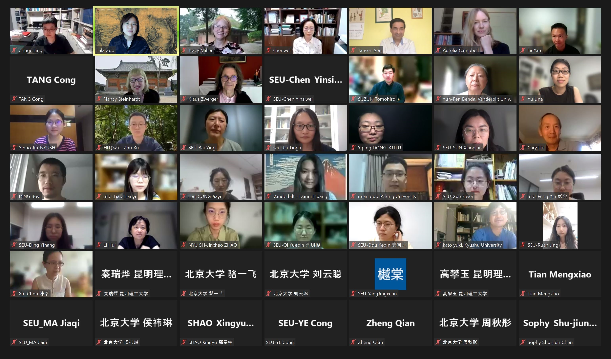
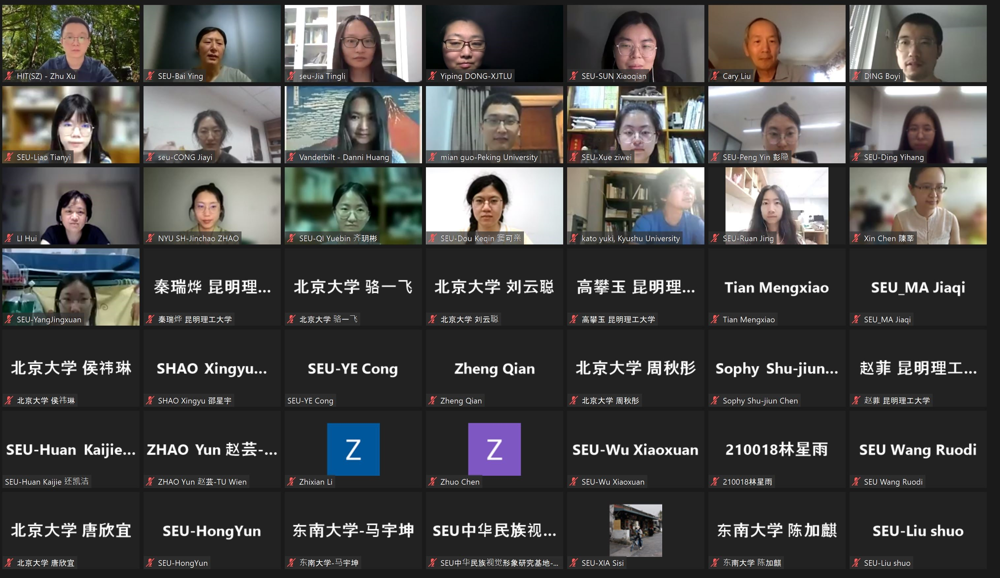

<?xml version="1.0" encoding="UTF-8"?>
<div xmlns="http://www.w3.org/1999/xhtml" xmlns:xi="http://www.w3.org/2001/XInclude" data-template="templates:surround" data-template-with="templates/page.html" data-template-at="content">
    <div class="row top-padding">
        <div class="container">
            <div class="indent">
                <div>
                    
                    
                    <h2> 
                        <a class="logo" target="_blank">
                        
                        </a>
                        ATTCAT: The Annotation and Translation of Traditional Chinese Architecture Terminology
                    </h2>
                    <p>ATTCAT is a research forum for the  inquiry into the meaning of technical terms in Traditional Chinese Architecture. 2022 was the fourth meeting of the forum.We would like to express special thanks to Profs. Zuo Lala and Tansen Sen, as well as Chen Baolong and all the staff and administrators at NYU Shanghai, for the extra time they contributed to hosting this year's workshop, especially given the trying situation of a global pandemic.</p>
                    <p>ATTCAT 2022 participants:</p>
                    <ol>
                        <li>白颖 BAI Ying (School of Architecture, Southeast University, China)</li>
                        <li>許玉棻 Benda, Yuh-Fen (Vanderbilt University, USA)</li>
                        <li>金田 Campbell, Aurelia (Morrissey College of Arts and Sciences, Boston College, USA)</li>
                        <li>陳寶龍 CHEN Baolong (NYU Shanghai, China)</li>
                        <li>陳淑君 CHEN Shu-Jiun (Academia Sinica, Taiwan, ROC)</li>
                        <li>陳薇 CHEN Wei (School of Architecture, Southeast University, China)</li>
                        <li>陳莘 CHEN Xin (Chinese Cultural Relics, China)</li>
                        <li>陈寅思危 CHEN Yinsiwei (Southeast University, China)</li>
                        <li>陈卓 CHEN Zhuo (Vanderbilt University, USA)</li>
                        <li>丛佳仪 CONG Jiayi (Southeast University, China)</li>
                        <li>丁伯儀 DING Boyi (Vienna University of Technology (TU Wien))</li>
                        <li>丁一航 DING Yihang (Southeast University, China)</li>   
                        <li>窦可亲 DOU Keqin (Southeast University, China)</li>
                        <li>郭勉 GUO Mian (Peking University, China)</li>
                        <li>荷雅麗 Harrer, Alexandra (Tsinghua University, China)</li>
                        <li>还凯杰 HUAN Kaijie (Southeast University, China)</li>
                        <li>黄聃婗 HUANG Danni (University of Chicago, USA)</li>
                        <li>贾亭立 JIA Tingli (School of Architecture, Southeast University, China)</li>
                        <li>金一诺 JIN Yinuo (NYU Shanghai, China)</li>
                        <li>李晖 LI Hui (Nara National Research Institute for Cultural Properties, Japan)</li>
                        <li>李知賢 LI Zhixian (Vanderbilt University, USA)</li>
                        <li>廖天怡 LIAO Tianyi (Southeast University, China)</li>
                        <li>林星雨 LIN Xingyu (Southeast University, China)</li>
                        <li>林偉正 LIN Wei-Cheng (University of Chicago, USA)</li>
                        <li>LIU Cary (Princeton University, USA)</li>
                        <li>刘妍 LIU Yan (Kunming University of Science and Technology, China)</li>
                        <li>盧履彥 LU Lu-Yen (Academia Sinica, Taiwan, ROC)</li>
                        <li>加藤悠希 KATO Yuki (Kyushu University, Fukuoka, Japan)</li>
                        <li>梅晨曦 Miller, Tracy (College of Arts and Science, Vanderbilt University, USA)</li>
                        <li>彭隐 PENG Ying (Southeast University, China)</li>
                        <li>齐玥彬 QI Yuebin (Southeast University, China)</li>
                        <li>秦瑞烨 QIN Ruiye (Kunming University of Science and Technology, China)</li>
                        <li>阮景 RUAN Jing (Southeast University, China)</li>
                        <li>鲁克思 Ruitenbeek, Klaas (Asian Art Museum, Berlin, Germany)</li>
                        <li>Tansen SEN (NYU Shanghai, China)</li>
                        <li>夏南悉 Steinhardt, Nancy (University of Pennsylvania, USA)</li>
                        <li>孫曉倩 SUN Xiaoqian (School of Architecture, Southeast University, China)</li>
                        <li>铃木智大 SUZUKI Tomohiro (Nara National Research Institute for Cultural Properties, Japan)</li>
                        <li>唐聪 TANG Cong (Lecturer, Chongqing University, China)</li>
                        <li>海野聪 UNNO Satoshi (Tokyo University, Japan</li>
                        <li>王若菂 Wang Ruodi  (Southeast University, China)</li>
                        <li>吴晓璇 WU Xiaoxuan (Southeast University, China)</li>
                        <li>徐翥 XU Zhu (Harbin Institute of Technology, Shenzhen, China)</li>
                        <li>薛紫薇 XUE Ziwei (Southeast University, China)</li>
                        <li>鄢然 YAN Ran (East Asian Language and Civilizations, University of Pennsylvania)</li>
                        <li>杨静轩 YANG Jingxuan | Southeast University</li>
                        <li>俞莉娜 YU Lina (School of Archeology and Museology, Peking University, China)</li>
                        <li>趙晉超 ZHAO Jinchao (NYU Shanghai, China)</li>
                        <li>郑蒨 ZHENG Qian (Vienna University of Technology (TU Wien))</li>
                        <li>诸葛净 ZHUGE Jing (School of Architecture, Southeast University, China)</li>
                        <li>左拉拉 ZUO Lala (NYU Shanghai, China)</li>
                        <li>Zwerger, Klaus (Vienna University of Technology (TU Wien))</li>
                    </ol>
                </div>
            </div>
        </div>
        <div class="container">
            <hr/>
            <h3>The <em>Architectura Sinica</em> project was made possible by these institutions and sponsors:</h3>
            <hr/>
            <ul class="list-inline funding sponsors">
                <li>
                    <a href="https://www.neh.gov/" class="logo" target="_blank">
                        
                    </a>
                </li>
                <li>
                    <a href="https://mellon.org/" class="logo" target="_blank">
                        
                    </a>                    
                </li>
                <li>
                    <a href="http://www.grahamfoundation.org/" class="logo" target="_blank">
                        
                    </a>                    
                </li>
                <li>
                    <a href="https://as.vanderbilt.edu/" class="logo" target="_blank">
                        
                    </a>                    
                </li>
                <li>
                    <a href="https://as.vanderbilt.edu/historyart/" class="logo" target="_blank">
                        
                    </a>                    
                </li>
                <li>
                    <a href="http://www.library.vanderbilt.edu/" class="logo" target="_blank">
                        
                    </a>                    
                </li>
                <li>
                    <a href="http://www.seu.edu.cn/" class="logo" target="_blank">
                        
                    </a>                    
                </li>
                <li>
                    <a href="http://arch.seu.edu.cn//" class="logo" target="_blank">
                        
                    </a>                    
                </li>
                <li>
                    <a href="https://shanghai.nyu.edu/" class="logo" target="_blank">
                        
                    </a>                    
                </li>
                <li>
                    <a href="https://cga.shanghai.nyu.edu/" class="logo" target="_blank">
                        
                    </a>                    
                </li>
                <li>
                    <a href="https://www.songyuan.org/" class="logo" target="_blank">
                        
                    </a>                    
                </li>
            </ul>
        </div>
    </div>
</div>
